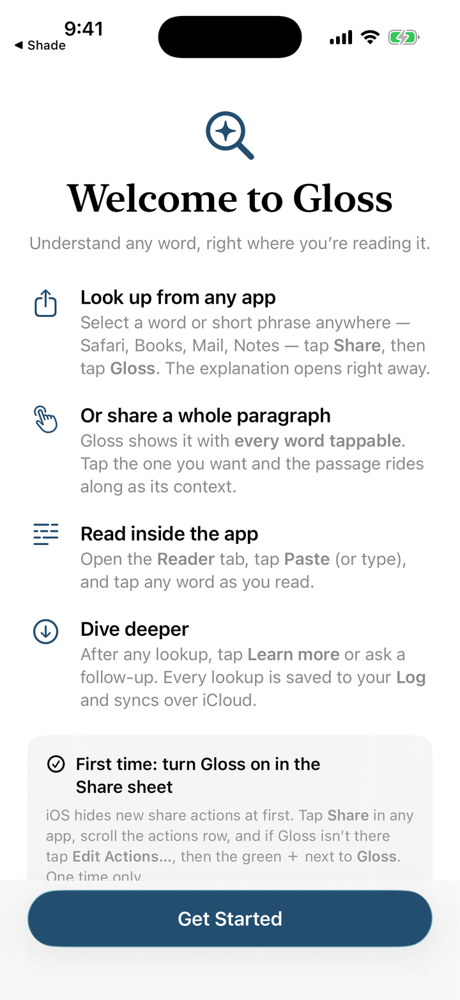

A dictionary that has read the whole paragraph.
Definitions tell you what a word can mean. Gloss tells you what it means right here, in the sentence in front of you.
It works wherever you read: select text in Safari, Books, Mail, or any app and share it to Gloss. Share a whole paragraph and every word in it becomes tappable — pick the one that stopped you, and the passage rides along as context. Ask follow-up questions to go deeper, and every lookup lands in a log you can flip back through later. Each device gets a free daily allowance; there is nothing to sign up for and no key to manage.

Under the hood
SwiftUI · Explanations written by Claude via a small proxy that keeps the API key out of the app